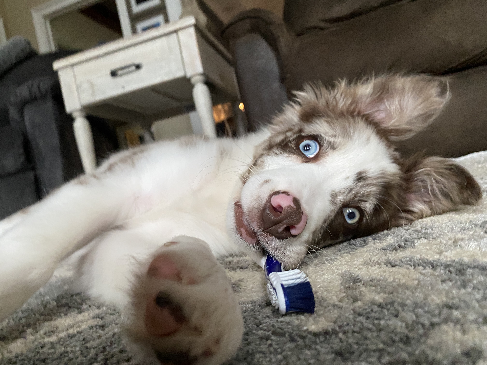
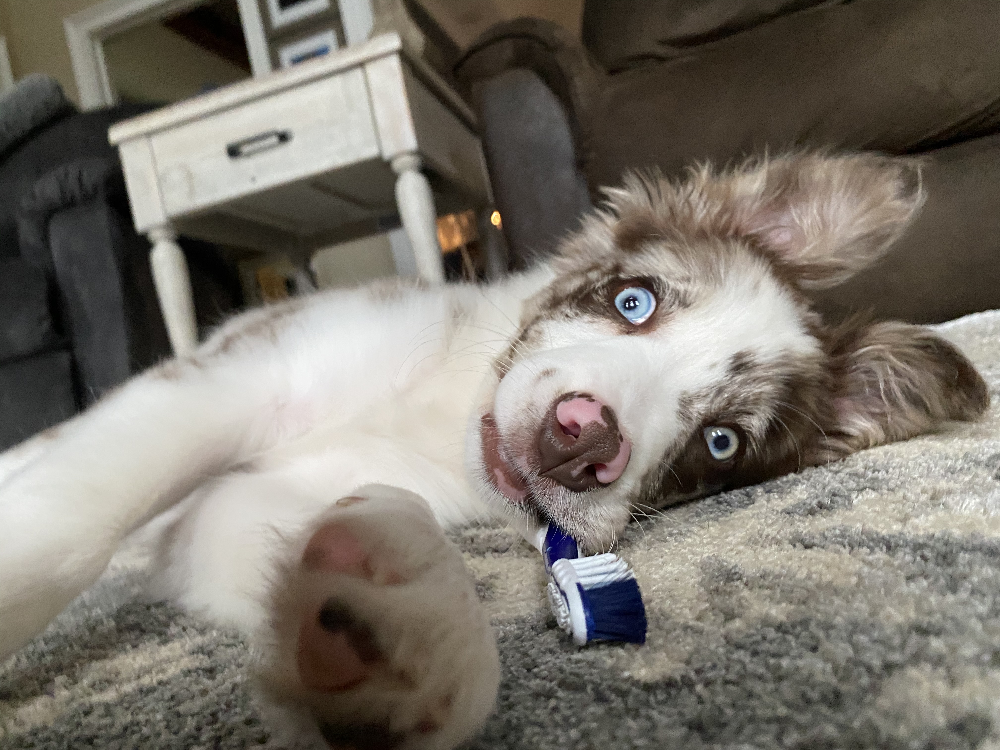

Interests
I spend a lot of my time reading, watching movies/TV, and listening to music. I'm also an avid concert and music festival goer! I also run regularly and play a lot of pickleball, with some golf here and there. In the summer, I’m usually on the lake, wake surfing and wakeboarding as much as possible. I like staying active, but I also don’t mind just hanging out and listening to music or finding something new to watch. Lastly, I love animals and currently have a four year old border collie that I love dearly! Put Your Paws Up!
 

Fun Facts About Me:
- I grew up on a farm and helped my family raise cattle!
- I've won three pickleball tournaments!
- I'm currently training for a full marathon!
- I've collected over a hundred vinyl records!
- I'm a redhead!
- I can solve a Rubik's Cube in under 30 seconds!
- I have three siblings!
- I love to cook!
- On average I watch 3-4 movies a week!
- My favorite band is the 1975!